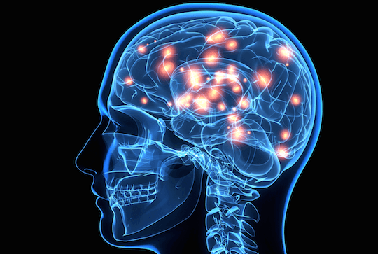

Bigger muscles, fat-loss, and a heightened sex drive are probably the first things that come to mind when you think of testosterone. But did you know that your testosterone also determines your mental health? Or that it determines your risk tolerance and how you show up against competition? That’s right.
In this article, I’ll discuss 4 little-known benefits of having optimal testosterone levels. See which ones affect you and which ones don’t.
Sign #1 – Sharp memory

In this study, men with higher levels of testosterone scored significantly better on tests of visual and spatial memory. These results were mirrored in another study where researchers randomized 37 subjects to receive either a weekly dose of testosterone or placebo for 4-weeks. After 4-weeks, the men receiving testosterone treatments scored significantly better on tests of verbal fluency.
How does testosterone impact brain health?
Well, preclinical observations assert that testosterone protects brain cells against damage and decay. This is why brain fog, memory loss, and difficulty concentrating are some common symptoms of having sub-optimal testosterone. This is also why men with lower levels of T have an increased incidence of Alzheimer’s disease.
To ensure that your brain maintains optimal health and function into old age, it’s important that you start taking the steps right now to achieve and maintain optimal testosterone levels for years to come.
Sign #2 – Positive outlook
Have those Monday blues turned into an everyday thing? If so, chances are that sub-optimal testosterone levels are a contributing cause. In this meta-analysis spanning over 16 scientific studies and more than 900 subjects, researchers came to the conclusion that testosterone exerts a significant positive impact on mood.
On the flip-side, low levels of testosterone have been found to be a major contributor to depression. And when depressed men are given testosterone treatments, they report significant improvements in mood.
All-in-all, your testosterone has a significant impact on your mood. If you feel like you’ve lost your zest for life, it’s important that you get your testosterone level measured to figure out your room for improvement moving forward.
Sign #3 – Increased risk tolerance
In this study, researchers brought in 154 subjects (78 men, 76 women) and had them engage in a gambling task. Blood samples were collected before the experiment. Across the board, both the men and women with higher levels of testosterone engaged in a greater amount of risk.
In this study on MBA students, the ones with the highest levels of testosterone chose the riskiest careers. And finally, in this study on financial traders it was revealed that a traders early morning level of testosterone accurately predicted his profits for the day. High risk equals high reward, and the traders willing to engage in the highest amount of risk also set themselves up for the greatest amount of profit.
Now, of course taking risks comes with a potential downside – that’s what makes it a risk – but without risk there is no growth. Taking risks is what’s allowed mankind to conquer the world, build nations, and even land on the moon. No great feat was ever accomplished without some element of risk being involved. What risk are you procrastinating on that has the possibility of taking your life to the next level?
Sign #4 – Competitive drive
In this study, men were brought in to compete in a rigged 1-on-1 competition. Blood samples were collected before and after each loss. Results revealed that the men who experienced a spike in testosterone after the loss were more likely to choose to compete again compared to the men who experienced a drop in testosterone.
In a study on university tennis players, it was revealed that the players with the highest pre-match testosterone levels reported the most significant positive effects on mood. Also, the post-match T-levels rose higher for the match winners compared to the match losers. Furthermore, the rise in T induced the winners to be even more focused and motivated for the next round of competition.
In biology, this is referred to as the winner-effect and it was first demonstrated in mice. Right off the bat, a smaller and weaker mouse is unable to overcome a larger and more dominant opponent. But, when a smaller mouse is allowed to win against a drugged mouse of similar size, his chances of overcoming the larger and more dominant mouse in the next round of competition increase – despite no improvement in fighting ability. The reason? Winning the first round of competition causes the mouse to experience a spike in testosterone, which increases his focus and drive for the next round.
The winner-effect occurs in humans as well. Overcoming obstacles and setting personal records induces a testosterone increase which, in turn, makes us more focused and motivated in the next round of competition.
Testosterone is the fuel to your competitive drive and the winner effect is a feedback loop that feeds into this drive to make you more aggressive and dominant in each subsequent encounter.
The winner-effect could, however, easily go the other way. Each winning encounter could spike your testosterone levels to the point where your estimation of your abilities become exaggerated and impair your decision making. This is why media commentators have mentioned the winner-effect as a possible cause of the 2008 financial crisis.
Conclusion
Yes, testosterone determines your ability to gain muscle, lose fat, and express your sexuality but its true impact extends far beyond just these three areas. Your mental health, your outlook on life, your tolerance for risk, and your ability to show up against competition are all factors impacted by the amount of testosterone running through your veins. Maintain optimal testosterone levels and you’ll maintain your health, well-being, and virility well into old age.
Interested in natural testosterone optimization? Sign-up for the FREE 7-Day Testosterone Optimization Email Course that has helped 2,037+ men naturally ignite their energy, power, and passion using powerful lifestyle hacks that actually work.
Read More: 5 Myths About Testosterone That Seriously Need To Die